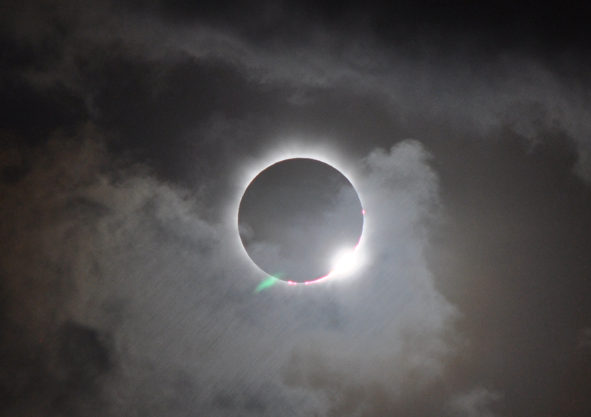
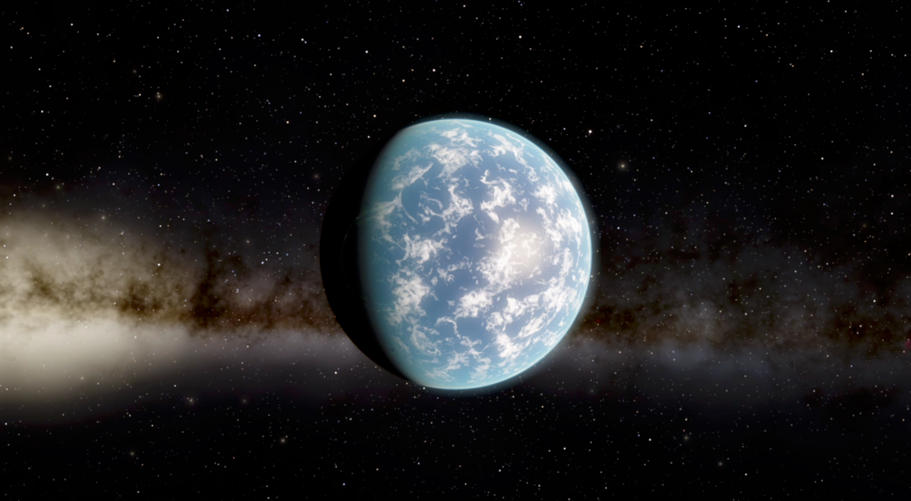

Aardobservatie
Satellietwaarnemingen van wolken, aerosolen en spoorgassen helpen om klimaat en luchtkwaliteit te volgen. Mijn werk richt zich op het stralingstransport achter die metingen, inclusief wolkenschaduwen en zonsverduisteringen.
Atmosfeer- en planeetwetenschapper · ontwikkelaar van MONKI
Nederlandse atmosfeer- en planeetwetenschapper bij TU Delft en KNMI, met onderzoek naar de aarde, Venus en aardachtige exoplaneten.
Van de fysica van gepolariseerd licht naar waarnemingen van planeetatmosferen. Ik ontwikkel en gebruik computerprogramma’s voor stralingstransport om totaal en gepolariseerd licht in planeetatmosferen te simuleren. Een centraal onderdeel van mijn werk is MONKI, een Monte Carlo-stralingstransportcode in Fortran die ik vanaf nul heb opgebouwd om verstrooiing van gepolariseerd licht door 3D-bewolkte atmosferen te verbinden met satelliet- en telescoopwaarnemingen.
Kernexpertise
Mijn werk begint bij de fysica van licht: verstrooiing en absorptie door deeltjes en gassen in de atmosfeer, polarisatie van licht, reflectie door land- en oceaanoppervlakken, en de geometrie van echte atmosferen. Die fysica vertaal ik naar numerieke modellen waarmee ik signalen in gereflecteerd licht interpreteer voor aardobservatiesatellieten, Venusmissies en toekomstige waarnemingen van aardachtige exoplaneten.
Satellietwaarnemingen van wolken, aerosolen en spoorgassen helpen om klimaat en luchtkwaliteit te volgen. Mijn werk richt zich op het stralingstransport achter die metingen, inclusief wolkenschaduwen en zonsverduisteringen.

Onze dichtstbijzijnde buurplaneet, een wereld met ongeveer de grootte van de aarde die zich heel anders ontwikkelde. Ik simuleer gepolariseerd gereflecteerd zonlicht voor ESA's EnVision-missie, gepland voor lancering in de jaren 2030, inclusief uitdagende schemerings- en limb-geometrieën.

Exoplaneten zijn planeten buiten ons zonnestelsel. Ik simuleer signalen in gereflecteerd licht om te testen hoe toekomstige telescopen oceanen, wolken en mogelijke bewoonbaarheid op verre aardachtige werelden kunnen herkennen.

Aardobservatie
Door satellietgegevens tijdens zonsverduisteringen te herstellen, vond ik bewijs dat ondiepe cumuluswolken boven land snel reageren wanneer zonlicht tijdelijk wordt verminderd. Dit kan implicaties hebben voor voorgestelde vormen van klimaatengineering, omdat verdwijnende wolken een deel van de beoogde afkoeling door kunstmatige zonlichtreductie kunnen tegenwerken.

Exoplaneten
Mijn exoplanetenwerk liet zien hoe polarisatie en kleurvariaties van gereflecteerd sterlicht aanwijzingen voor vloeibare oceanen kunnen bevatten. Het vinden van zo'n oceaan zou een mijlpaal zijn in de zoektocht naar leven buiten het zonnestelsel. Dezelfde simulaties zijn later gebruikt in een studie voor NASA's Habitable Worlds Observatory.

MONKI · 3D Monte Carlo-stralingstransport
MONKI is de belangrijkste softwareontwikkeling in mijn werk: een Fortran-code die ik vanaf nul heb geschreven om totale en gepolariseerde gereflecteerde straling in realistische planeetatmosferen te simuleren, inclusief 3D-wolkstructuren en meervoudige verstrooiing.

DARCLOS · TROPOMI-wolkenschaduwdetectie
DARCLOS identificeert wolkenschaduwscènes in TROPOMI-waarnemingen. De methode ondersteunt de interpretatie van aerosol- en oppervlaktereflectieproducten door situaties te markeren waarin 3D-wolkgeometrie het gemeten stralingsveld beïnvloedt.

Zonsverduisteringscorrectie · eclipsexperiment
Ik ontwikkelde een correctiemethode om satellietmetingen tijdens zonsverduisteringen te herstellen. Daardoor konden eclipsen worden gebruikt als gecontroleerde lichtverstoringen en werd de snelle respons van ondiepe cumuluswolken op verminderd zonlicht zichtbaar.
27 mei 2026
MONKI is gebruikt in een studie onder leiding van Job Wiltink om te kwantificeren hoe driedimensionale wolk-stralingsinteracties satellietschattingen van globale horizontale instraling beïnvloeden: de hoeveelheid zonlicht die een horizontaal oppervlak aan de grond bereikt.
Zulke 3D-effecten zitten vaak verscholen binnen grote satellietpixels. Licht kan horizontaal worden getransporteerd tussen bewolkte en onbewolkte delen van een scène, en wolkenschaduwen kunnen de instraling aan het oppervlak verlagen. Nu nieuwe geostationaire weersatellieten wolken met kleinere pixels waarnemen, worden deze effecten steeds belangrijker voor de interpretatie en correctie van satellietproducten voor instraling.
De studie combineert MONKI met realistische wolkenvelden uit MicroHH, een large-eddy-simulatiemodel voor wolken, en laat zien hoe pixelgrootte, wolkenstructuur en horizontaal fotonentransport het satellietproduct voor instraling beïnvloeden.

9–13 februari 2026
Ik was de hele week bij het Lorentz Center in Leiden voor de workshop “Roadmap to the Exploration of Venus Habitability”. De bijeenkomst bracht onderzoekers samen die werken aan Venus’ geologie, inwendige structuur, evolutie van de atmosfeer en toekomstige missieconcepten.
We bespraken welke waarnemingen en missiestrategieën nodig zijn om te begrijpen hoe Venus is geëvolueerd en of de planeet ooit bewoonbaar kan zijn geweest. Ik droeg bij vanuit het perspectief van modellering van gereflecteerd licht en beargumenteerde hoe polarimetrie kan helpen om Venus’ wolken, nevels en structuur van de atmosfeer beter te bepalen.